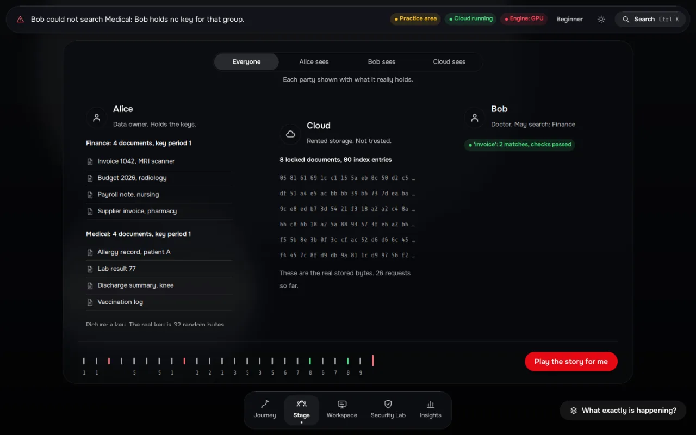
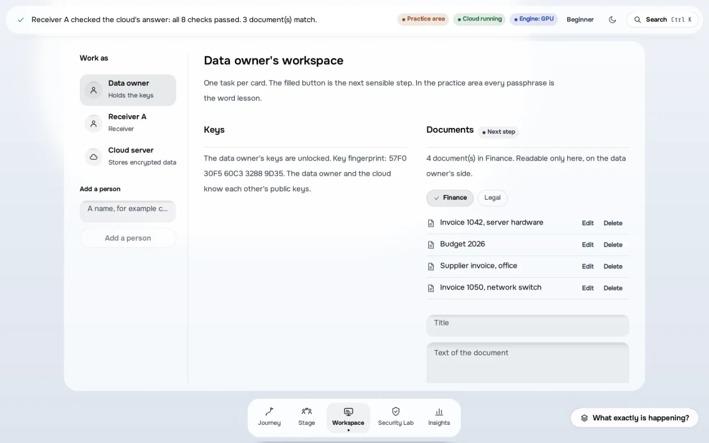
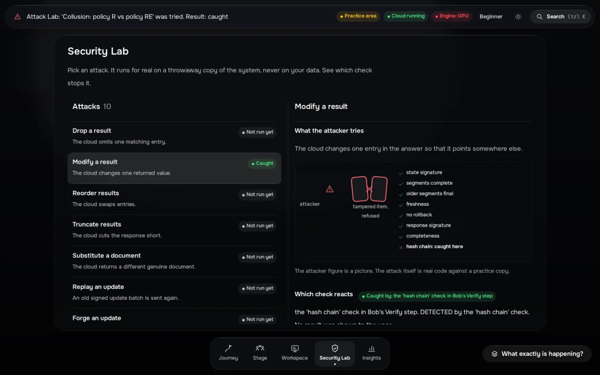

Search locked files without unlocking them
Alice keeps her documents in a cloud she does not trust. Bob and Carol may search some of them. The cloud stores everything, answers every search, and never sees a word. PQ-SSE Desktop lets you watch that happen on your own PC, step by step.
Who is in the story
- AliceOwns the documents and holds the keys. She decides who may search what.
- The CloudRented storage. It keeps the locked documents and answers searches, but cannot read either.
- Bob and CarolDoctors. Each may search only the groups Alice approved, and can prove the answer is complete.
What it looks like




What it is, plainly
- Every step is the real protocol, not an animation of one: ten algorithms, from key setup to revoking a doctor.
- Keys are made with ML-KEM and documents are signed with ML-DSA, the post-quantum standards NIST published in 2024.
- Everything runs on your PC. The cloud part is a second program on the same machine; nothing is sent to the internet.
- It is research and teaching software. It has not been audited, and the post-quantum code is slow and not constant time.
Where to go next
- DownloadPick the right file for your PC and check it.
- Install guideWhat Windows will ask, and why it warns about new software.
- How it worksThe ten algorithms in plain language.